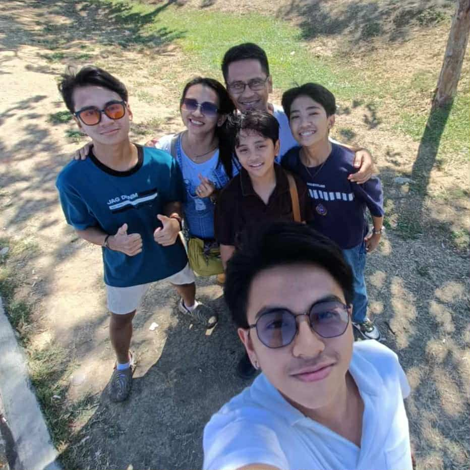
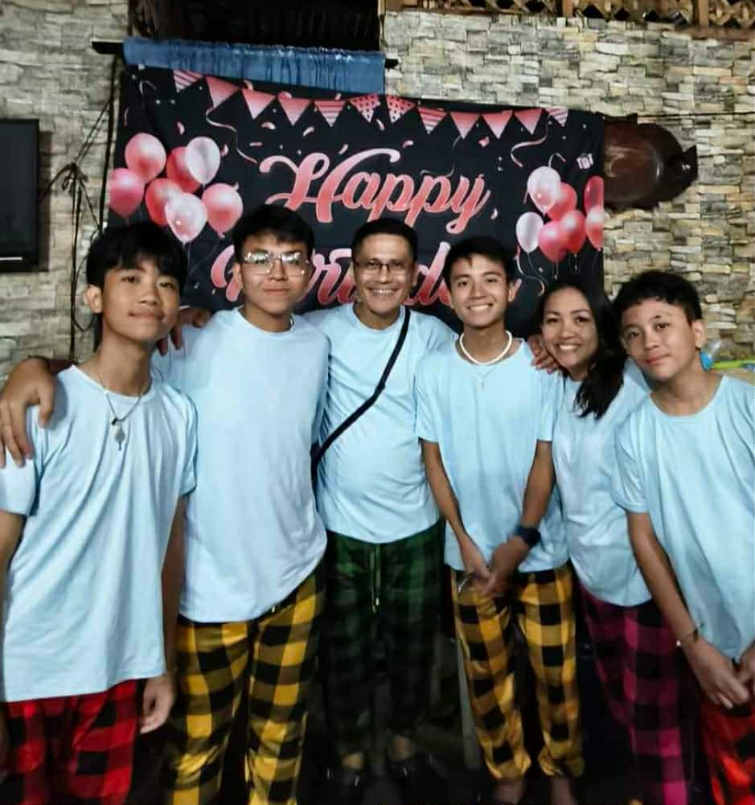
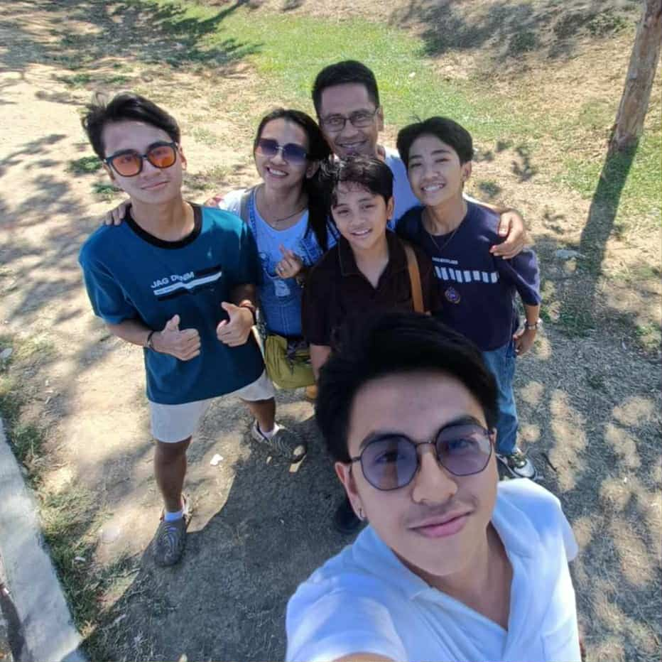
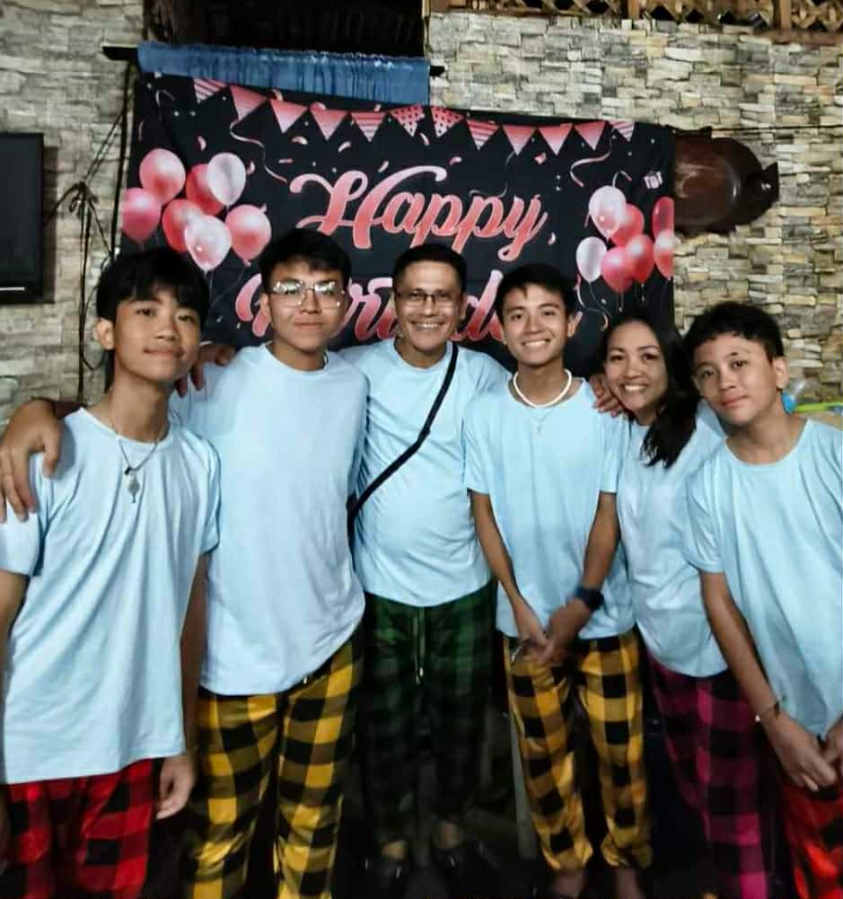

His name is Jesus D. Raquedan, 52 years old. He is one of the strongest people I know—emotionally and spiritually. My father is very humble, understanding, supportive, and faithful. He is the one who drove our family towards God. My father is not just my father but also my mentor, advisor, disciplinarian, and of course, number 1 supporter! He is the one who teaches all of us on how to live in God's way—asking us, "What will Jesus do?". OOH! I forgot to mention he is a very happy person and a comedian! He would often want to light up the mood and erase the negative energy.


 
